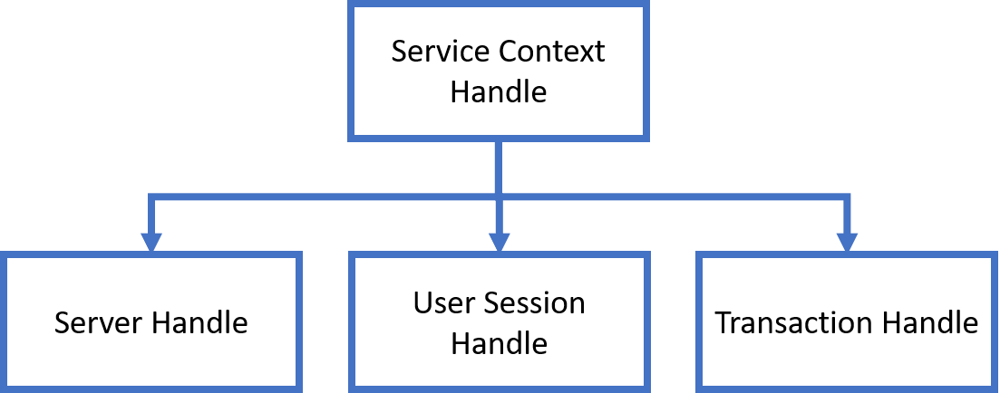

Harlinn.OCI
Harlinn.OCI
The primary advantage of using the Oracle Call Interface and C++ is performance. This advantage is not something we achieve just because we are using C++ and OCI, it is something we may achieve through a well-reasoned design. With the Harlinn.OCI library, I’ve tried to achieve two goals:
- Ease of use.
- Fine-grained control of how data is exchanged with the Oracle RDBMS through the Oracle Call Interface. This can make a huge difference in the performance of your OCI client application.
To use the Harlinn.OCI library, include the HOCI.h header file.
#include <HOCI.h>
using namespace Harlinn::OCI;
Ease of Use
Harlinn.OCI provides an API that’s easy to use:
EnvironmentOptions options;
Environment environment( options );
auto server = environment.CreateServer( );
auto serviceContext = server.CreateServiceContext( Username, Password, Alias );
serviceContext.SessionBegin( );
WideString sql =
L"SELECT * FROM ALL_USERS";
auto statement = serviceContext.CreateStatement( sql );
auto reader = statement.ExecuteReader<DataReader>( );
while ( reader->Read( ) )
{
auto userName = reader->As<WideString>( 0 );
auto userId = reader->As<Int64>( 1 );
auto created = reader->As<DateTime>( 2 );
}
serviceContext.SessionEnd( );
Calling a server-side function:
WideString sql =
L"BEGIN"\
L" :result := SYSTIMESTAMP();" \
L"END;";
auto statement = serviceContext.CreateStatement( sql );
auto result = statement.Bind<DateTime>( 1 );
statement.Execute( 1 );
auto dateTime = result->As<DateTime>( );
or inserting a row:
std::optional<WideString> description;
if ( ownedObjectType.Description( ).length( ) )
{
description = ownedObjectType.Description( );
}
constexpr wchar_t SQL[] = L"INSERT INTO OwnedObjectType(Id, Name, OptimisticLock, "
L"Created, Description) "\
L"VALUES(:1,:2,0,:3,:4)";
static WideString sql( SQL );
auto statement = serviceContext_.CreateStatement( sql,
ownedObjectType.Id( ),
ownedObjectType.Name( ),
ownedObjectType.Created( ),
description );
statement.Execute( );
are all operations that can be easily implemented with the library. Harlinn.OCI implements
a thin, yet feature rich, layer around the OCI C API. Harlinn.OCI depends on the
Harlinn.Common.Core library, for implementations
of basic datatypes such as WideString, Guid, DateTime and TimeSpan.
Create, Retrieve, Update and Delete (CRUD)
Basic CRUD is the heart and soul of many applications, and this is a simple, yet typical, table:
CREATE TABLE SimpleTest1
(
Id NUMBER(19) NOT NULL,
OptimisticLock NUMBER(19) DEFAULT 0 NOT NULL,
Name NVARCHAR2(128) NOT NULL,
Description NVARCHAR2(1024),
CONSTRAINT PK_SimpleTest1 PRIMARY KEY(Id),
CONSTRAINT UNQ_SimpleTest1 UNIQUE(Name)
);
Description:
- The Id column is the primary key for the table, mandating that a unique value must be stored for each row in the table.
- The OptimisticLock column is used to implement optimistic locking, a widely used technique for guarding against inadvertent overwrites by multiple concurrent users. If an application can do the following:
- User1 retrieves a row of data.
- User2 retrieves the same row of data.
- User2 updates column value and updates the row in the database.
- User1 updates the same column value and updates the row in the database, overwriting the change made by User2.
then this is almost always a design bug.
- The Name column provides an alternative key to the rows in the table.
- The Description column holds data that is of interest to the solution that uses the database to manage its data.
A numeric primary key is often generated using an Oracle database sequence object:
CREATE SEQUENCE SimpleTest1Seq;
Which can be used to ensure that unique keys will be created for concurrent inserts by multiple database client applications.
Optimistic Locking
Nearly all software solutions that use a database server to store data must be able to handle multiple concurrent sessions. At any point in time, you can expect multiple processes or users to retrieve and update the database. Since multiple processes or users are updating the information in the database, it is only a matter of time before two separate processes or users will try to update the same piece of data concurrently.
Optimistic Locking is a minimalistic strategy for preventing unintentional updates to a row based on a version number stored in one of the columns of the row. When the software attempts to update or delete a row, it is filtered on the version number to make sure the row has not been updated between time the row was retrieved from the database, and the update or delete. Updates must ensure that changes to the column for the version number are atomic.
It is called optimistic locking because it assumes that most updates and deletes will succeed; and when they do not, the software must be able to handle this appropriately.
How to correctly handle situations where the optimistic lock prevents an update, or a delete, depends on the use-case. An interactive solution may retrieve the updated row from the database and let the user decide whether to overwrite it or abandon her modifications, while an automated system may implement a more complex solution, or store the rejected update elsewhere for manual intervention. The important thing is to maintain consistency while making sure that information is not inadvertently lost.
Optimistic locking is particularly useful for high-volume solutions; and web, and other multitier-tier architectures where the software is unable to maintain a dedicated connection to the database on behalf of the user. In these situations, the client cannot maintain database locks as the connections are taken from a pool and the client may not be using the same connection from one server request to the next.
The main downside of optimistic locking is that it is row oriented, and many real-world solutions requires synchronization that goes beyond a single row.
Even when you end up using a more powerful lock management solution, optimistic locking will almost certainly help to uncover programming errors during development, deployment, and operation.
The alternative to optimistic locking in called pessimistic locking, it is not last write wins. Pessimistic locking requires an active system component that maintains the locks, such as table or row level locking implemented by the database server, or a dedicated distributed lock server. Database locks are usually tied to the database session but can also be under control of a distributed transaction manager.
The Oracle database provides the DBMS_LOCK package, which can be used to implement pessimistic locking. The maximum lifetime of a lock is limited to the lifetime of the session used to create it.
Basic CRUD using Harlinn.OCI
Implementing basic CRUD using Harlinn.OCI is also a straightforward process, and the code again illustrates how to properly implement optimistic locking using atomic operations in plain DML.
Create
To insert a new record into the database, we must perform the following steps:
-
Create an
OCI::Statementobject by callingCreateStatement(...)on the service context. The first argument is theINSERTdata manipulation language (DML) statement with variable placeholders for the Name, Description and finally the server generated value for the Id column. The second and third parameters are automatically bound to the two first variable placeholders. -
Bind the third variable placeholder to a 64-bit integer, that will receive the server generated primary key, using an
Int64Bindobject. -
Call the
ExecuteNonQuery()member function of theOCI::Statementobject to execute the DML statement on the database server.
The two first placeholders :1 and :2 are created for the Name and Description column, respectively; while the third
placeholder is for the value of the Id column that will be generated by the call to SimpleTest1Seq.NextVal inside the DML
as specified by the trailing RETURNING Id INTO :3. The OptimisticLock column gets assigned 0 marking this as the initial
version of the row:
std::unique_ptr<SimpleTestData> Insert( const WideString& name,
const WideString& description = WideString( ) ) const
{
auto& serviceContext = ServiceContext( );
std::optional<WideString> descr;
if ( description.size( ) )
{
descr = description;
}
constexpr wchar_t sql[] =
L"INSERT INTO SimpleTest1(Id, OptimisticLock, Name, Description ) "
L"VALUES(SimpleTest1Seq.NextVal,0,:1,:2) RETURNING Id INTO :3";
auto statement = serviceContext.CreateStatement( sql, name, descr );
auto* idBind = statement.Bind<Int64>( 3 );
auto transaction = serviceContext.BeginTransaction( );
statement.ExecuteNonQuery( );
transaction.Commit( );
auto id = idBind->AsInt64( );
return std::make_unique<SimpleTestData>( id, 0, name, description );
}
Retrieve
The steps for preparing an OCI::Statement object for retrieving the data for a particular
row are nearly identical to those used to insert a new record, except that this time, we
must pass the structured query language (SQL) statement
with a single variable placeholder as the first parameter to the CreateStatement(...)
function, and the value to assign to this placeholder as the second argument.
Call ExecuteReader on the OCI::Statement object to execute the query on the database
server. ExecuteReader returns an OCI::DataReader that provides access to the query results.
Since we already know the value of the Id column, we only ask for the OptimisticLock,
Name and Description columns. The value of the Id column is guaranteed to uniquely
identify a single row in the SimpleTest1 table, so we only execute reader->Read()
once, and if it returns true, we know that the query was able to locate the requested
row. The OptimisticLock and Name columns cannot be NULL, while the Description column
can - which we check by calling IsDBNull. Each column for the current row is identified
by its 0 based offset into the select-list:
std::unique_ptr<SimpleTestData> Select( Int64 id ) const
{
auto& serviceContext = ServiceContext( );
constexpr wchar_t sql[] =
L"SELECT OptimisticLock, Name, Description FROM SimpleTest1 "
L"WHERE Id = :1";
auto statement = serviceContext.CreateStatement( sql, id );
auto reader = statement.ExecuteReader( );
if ( reader->Read( ) )
{
auto optimisticLock = reader->GetInt64( 0 );
auto name = reader->GetString( 1 );
WideString description;
if ( reader->IsDBNull( 2 ) == false )
{
description = reader->GetString( 2 );
}
return std::make_unique<SimpleTestData>( id, optimisticLock,
name, description );
}
else
{
return nullptr;
}
}
Update
Again, we use an OCI::Statement object, passing an UPDATE DML statement as the first parameter to the
CreateStatement(...) function. This time, the variable placeholders are only for input variables and
the variables holding the values are passed as the additional arguments.
The row is not updated unless the Id column matches the value bound to the third variable placeholder and the OptimisticLock column matches the value bound to the fourth variable placeholder. This will prevent the DML from updating the row if it has been updated by another user or process; and as a side effect, we also know that the next value for the OptimisticLock column, after a successful update, will be the previous value incremented by 1.
The DML statement can at most update a single row in the SimpleTest1 table and since ExecuteNonQuery()
returns the number of rows that was altered by the DML statement, we can safely assume that a return
value greater than 0 means that the update succeeded, while 0 means that either the row is deleted or
the value for the OptimisticLock column has been changed by another update:
bool Update( SimpleTestData& data )
{
auto id = data.Id();
auto optimisticLock = data.OptimisticLock();
auto& name = data.Name();
auto& description = data.Description();
auto& serviceContext = ServiceContext( );
std::optional<WideString> descr;
if ( description.size( ) )
{
descr = description;
}
constexpr wchar_t sql[] = L"UPDATE SimpleTest1 "
L"SET OptimisticLock=OptimisticLock+1, Name=:1, Description=:2 "
L"WHERE Id=:3 AND OptimisticLock=:4";
auto statement = serviceContext.CreateStatement( sql, name, descr,
id, optimisticLock );
if ( statement.ExecuteNonQuery( ) > 0 )
{
data.SetOptimisticLock( optimisticLock + 1 );
return true;
}
else
{
return false;
}
}
Delete
The logic behind the DELETE DML statement is nearly identical to the logic for updating a row:
bool Delete( const SimpleTestData& data )
{
auto id = data.Id( );
auto optimisticLock = data.OptimisticLock( );
auto& serviceContext = ServiceContext( );
constexpr wchar_t sql[] = L"DELETE FROM SimpleTest1 "
L"WHERE Id=:1 AND OptimisticLock=:2";
auto statement = serviceContext.CreateStatement( sql, id, optimisticLock );
if ( statement.ExecuteNonQuery( ) > 0 )
{
return true;
}
else
{
return false;
}
}
OCI Program Initialization
Just about every operation that can be done using OCI is performed through handles to OCI resources. Each application that uses OCI must create a handle to an OCI environment, defining a context for executing OCI functions. The environment handle establishes a memory cache for fast memory access, and all memory used by the environment comes from this cache.
Environment
The Environment class provides access to the functionality of the OCI environment handle.
OCI applications use an error handle as a conduit for error information between the client
application and the API, and the ErrorHandle class provides access to the functionality
for this handle type.
Creating an Environment is the first step performed when creating and application using
the Harlinn.OCI library:
EnvironmentOptions options;
Environment environment( options );
The Environment constructor calls CreateEnvironment( ) which creates the handle for the object.
void* Environment::CreateEnvironment( )
{
void* handle = nullptr;
auto rc = OCIEnvCreate( (OCIEnv**)&handle,
(UInt32)DefaultEnvironmentMode( ),
nullptr, nullptr, nullptr, nullptr, (size_t)0, (dvoid**)0 );
if ( rc < OCI::Result::Success )
{
ThrowOracleExceptionOnError( handle, rc );
}
return handle;
}
ErrorHandle
Once the Environment object has a valid handle, it creates an ErrorHandle object that is used
for all error handling, except for calls to OCIHandleAlloc, related to this Environment object.
OCI::ErrorHandle Environment::CreateError( ) const
{
void* errorHandle = nullptr;
auto rc = OCIHandleAlloc( (dvoid*)Handle( ),
(dvoid**)&errorHandle,
OCI_HTYPE_ERROR, 0, (dvoid**)0 );
if ( rc < OCI_SUCCESS )
{
ThrowOracleExceptionOnError( Handle( ), rc );
}
return OCI::ErrorHandle( *this, errorHandle, true );
}
ServiceContext, Server and Session
Next, we need to establish a handle to the service context that is required for most operational calls through OCI.
The service context handle contains three handles, representing the server connection, the user session, and the transaction:

- The server handle represents a physical connection in a connection-oriented transport mechanism between the client and the database server.
- The user session defines the roles and privileges of the user.
- The transaction handle represents the transaction context used to perform operations against the server. This includes user session state information, including fetch state and package instantiation.
To establish a service context handle that can be used to execute SQL statement against an Oracle database, we need to perform a number of steps:
- Allocate a sever handle using
OCIHandleAlloc. - Initialize the server handle using
OCIServerAttach. - Allocate the service context handle using
OCIHandleAlloc. - Assign the server handle to the service context handle using
OCIAttrSet. - Allocate the user session handle using
OCIHandleAlloc. - Assign the user session handle to the service context using
OCIAttrSet. - Assign the user name to the user session using
OCIAttrSet. - Assign the password to the user session using
OCIAttrSet. - Initialize the service context using
OCISessionBegin.
Harlinn.OCI simplifies this to:
auto server = environment.CreateServer( );
auto serviceContext = server.CreateServiceContext( Username, Password, Alias );
serviceContext.SessionBegin( );
But also allows each step to be performed separately:
auto server = environment.CreateServer( );
server.Attach( Alias );
auto serviceContext = environment.CreateServiceContext( );
serviceContext.SetServer( server );
auto session = environment.CreateSession( );
serviceContext.SetSession( std::move( session ) );
session.SetUserName( Username );
session.SetPassword( Password );
serviceContext.SessionBegin( );
This is useful when you need better control of how you want to configure the options for the various handle types provided by OCI.
Executing SQL against the Oracle Database
Now, that we have established a valid service context, we are ready to execute SQL statements against the Oracle database. To execute a SQL statement using OCI, the client application performs the following steps:
- Allocate a statement handle for the SQL statement using
OCIStmtPrepare2(). - For statements with input, or output, variables, each placeholder in the
statement must be bound to an address in the client application using
OCIBindByPos2(),OCIBindByName2(),OCIBindObject(),OCIBindDynamic()orOCIBindArrayOfStruct(). - Execute the statement by calling
OCIStmtExecute().
The remaining steps are only required for SQL queries:
- Describe the select-list items using
OCIParamGet()andOCIAttrGet(). This step is not required if the elements of the select list are known at compile-time. - Define output variables using
OCIDefineByPos2()orOCIDefineByPos(),OCIDefineObject(),OCIDefineDynamic(), orOCIDefineArrayOfStruct()for each item in the select list. - Fetch the results of the query using
OCIStmtFetch2().
The code below shows the easiest way to execute an SQL query with bound input variables:
WideString sql =
L"SELECT * FROM ALL_USERS WHERE USERNAME<>:1";
WideString myName( L"ESPEN" );
auto statement = serviceContext.CreateStatement( sql, myName );
auto reader = statement.ExecuteReader( );
while ( reader->Read( ) )
{
auto userName = reader->As<WideString>( 0 );
auto userId = reader->As<Int64>( 1 );
auto created = reader->As<DateTime>( 2 );
}
The CreateStatement(...) function binds all but the first argument automatically, and is able to perform
this for the following C++ types:
boolandstd::optional<bool>SByte(signed char) andstd::optional<SByte>Byte(unsigned char) andstd::optional<Byte>Int16(short) andstd::optional<Int16>UInt16(unsigned short) andstd::optional<UInt16>Int32(int) andstd::optional<Int32>UInt32(unsigned int) andstd::optional<UInt32>Int64(long long) andstd::optional<Int64>UInt64(unsigned long long) andstd::optional<UInt64>Single(float) andstd::optional<Single>Double(double) andstd::optional<Double>DateTimeandstd::optional<DateTime>Guidandstd::optional<Guid>WideStringandstd::optional<WideString>
If the argument is passed as one of the supported std::optional<> types, then std::optional<>::has_value()
is used to control the NULL indicator for the bind.
This way of binding variables is intended for input variables only. The CreateStatement function is implemented
as a variadic template function, which is why it is able to bind the arguments based on their type:
template<WideStringLike StringT, typename ...BindableTypes>
requires ( sizeof...( BindableTypes ) > 0 )
inline OCI::Statement ServiceContext::CreateStatement( const StringT& sql,
BindableTypes&& ...bindableArgs ) const
{
auto result = CreateStatement( sql );
Internal::BindArgs( result, 1,
std::forward<BindableTypes>( bindableArgs )... );
return result;
}
Where CreateStatement( sql )just calls:
template<WideStringLike StringT>
OCI::Statement CreateStatement( const StringT& sql ) const
{
return CreateStatement( sql.c_str(), sql.size() );
}
Calling the real CreateStatement implementation which creates the statement handle using OCIStmtPrepare2 and
checks for errors:
OCI::Statement ServiceContext::CreateStatement( const wchar_t* sql, size_t sqlLength ) const
{
auto& environment = Environment( );
if ( environment.IsValid( ) )
{
OCIStmt* ociStatement = nullptr;
auto& error = Error( );
auto errorHandle = (OCIError*)error.Handle( );
auto rc = OCIStmtPrepare2( (OCISvcCtx*)Handle( ), &ociStatement, errorHandle,
(OraText*)sql, static_cast<UInt32>( sqlLength * sizeof( wchar_t ) ),
nullptr, 0, OCI_NTV_SYNTAX, OCI_DEFAULT );
error.CheckResult( rc );
return Statement( *this, ociStatement, true );
}
else
{
ThrowInvalidEnvironment( );
}
}
While the internal implementation of BindArgs processes each of the variadic template arguments:
template<typename Arg, typename ...OtherArgsTypes>
void BindArgs( OCI::Statement& statement, UInt32 position,
const Arg& arg, OtherArgsTypes&& ...otherArgsTypes )
{
if constexpr ( IsAnyOf_v<Arg, WideString, std::wstring> )
{
auto newBind = statement.Bind<Arg>( position, arg.length( ) );
newBind->Assign( arg );
}
else if constexpr ( IsSpecializationOf<Arg, std::optional> )
{
using BintT = typename Arg::value_type;
if ( arg.has_value( ) )
{
if constexpr ( IsAnyOf_v< BintT, WideString, std::wstring> )
{
auto newBind = statement.Bind<BintT>( position, arg.value( ).length( ) );
newBind->Assign( arg.value() );
}
else
{
auto newBind = statement.Bind<BintT>( position );
newBind->Assign( arg.value( ) );
}
}
else
{
if constexpr ( IsAnyOf_v<BintT, WideString, std::wstring> )
{
auto newBind = statement.Bind<BintT>( position, static_cast<size_t>(0) );
newBind->SetDBNull( );
}
else
{
auto newBind = statement.Bind<BintT>( position );
newBind->SetDBNull( );
}
}
}
else
{
auto newBind = statement.Bind<Arg>( position );
newBind->Assign( arg );
}
if constexpr ( sizeof...( otherArgsTypes ) > 0 )
{
BindArgs( statement, position + 1, std::forward<OtherArgsTypes>( otherArgsTypes )... );
}
}
This shows how C++ can perform complex compile-time logic while ensuring that the code can still
be debugged, where if constexpr is used to control the code generation. Before C++ 17, debugging
code involving compile-time logic could be rather confusing.
The ExecuteReader function is where all the magic happens, and so far OCIStmtPrepare2 is the only
OCI function that has been called.
auto reader = statement.ExecuteReader( );
ExecuteReader performs three interesting operations:
- Creates the DataReader object, or an object of a type derived from DataReader
- Calls the InitializeDefines() function on the newly created object
- Executes the SQL statement
template<typename DataReaderType>
requires std::is_base_of_v<OCI::DataReader, DataReaderType>
inline std::unique_ptr<DataReaderType> Statement::ExecuteReader( StatementExecuteMode executeMode )
{
auto result = std::make_unique<DataReaderType>( *this );
result->InitializeDefines( );
auto rc = Execute( 1, executeMode );
result->Prefetch( rc );
return result;
}
The DataReader provides a default implementation of InitializeDefines() which performs an explicit
describe to determine the fields of the select-list and create appropriate defines using OCIDefineByPos2.
Another option is to create a class derived from DataReader:
class AllUsersReader : public DataReader
{
public:
using Base = DataReader;
constexpr static UInt32 USERNAME = 0;
constexpr static UInt32 USER_ID = 1;
constexpr static UInt32 CREATED = 2;
constexpr static UInt32 COMMON = 3;
constexpr static UInt32 ORACLE_MAINTAINED = 4;
constexpr static UInt32 INHERITED = 5;
constexpr static UInt32 DEFAULT_COLLATION = 6;
constexpr static UInt32 IMPLICIT = 7;
constexpr static UInt32 ALL_SHARD = 8;
constexpr static wchar_t SQL[] = L"SELECT USERNAME, "
L"USER_ID, CREATED, COMMON, ORACLE_MAINTAINED, "
L"INHERITED, DEFAULT_COLLATION, IMPLICIT, ALL_SHARD "
L"FROM ALL_USERS";
...
};
Each field gets its own id, which is the offset in the select-list. Since we know the types for the defines, we can create member variables for each field:
private:
CStringDefine* userName_ = nullptr;
Int64Define* userId_ = nullptr;
DateDefine* created_ = nullptr;
CStringDefine* common_ = nullptr;
CStringDefine* oracleMaintained_ = nullptr;
CStringDefine* inherited_ = nullptr;
CStringDefine* defaultCollation_ = nullptr;
CStringDefine* implicit_ = nullptr;
CStringDefine* allShard_ = nullptr;
public:
and then override the InitializeDefines( ) function:
virtual void InitializeDefines( ) override
{
userName_ = Define<CStringDefine>( USERNAME + 1, 128 );
userId_ = Define<Int64Define>( USER_ID + 1 );
created_ = Define<DateDefine>( CREATED + 1 );
common_ = Define<CStringDefine>( COMMON + 1, 3 );
oracleMaintained_ = Define<CStringDefine>( ORACLE_MAINTAINED + 1, 1 );
inherited_ = Define<CStringDefine>( INHERITED + 1, 3 );
defaultCollation_ = Define<CStringDefine>( DEFAULT_COLLATION + 1, 100 );
implicit_ = Define<CStringDefine>( IMPLICIT + 1, 3 );
allShard_ = Define<CStringDefine>( ALL_SHARD + 1, 3 );
}
This removes the need to perform any describe on the select-list and provides direct access to the objects that receives the data fetched from the database through OCI. We can easily implement function to access the data:
std::wstring UserName( ) const
{
return userName_->AsString( );
}
Int64 UserId( ) const
{
return userId_->AsInt64( );
}
DateTime Created( ) const
{
return created_->AsDateTime( );
}
And now, we can query the ALL_USERS view like this:
auto statement = serviceContext.CreateStatement( AllUsersReader::SQL );
auto reader = statement.ExecuteReader<AllUsersReader>( );
while ( reader->Read( ) )
{
auto userName = reader->UserName( );
auto userId = reader->UserId( );
auto created = reader->Created( );
}
While quite a bit more work, this executes more efficiently - and perhaps even more importantly: It isolates the internal implementation details of the query from the rest of the code.
There are also many situations where you know that it is more efficient to use a 64-bit integer than an
Oracle Number, or that OCI::Date is more appropriate than a Timestamp, or a long var binary (LVB) in
place of a BLOB. There are many real-world cases where the ability to control how data is exchanged with
Oracle is crucial to the performance of the solution.
Improving Query Performance
The article started out with a promise of high performance, and performance is a relative thing, so a base case is needed. Here are the tables that will be used for the test cases:
CREATE TABLE TimeseriesValue1
(
Id NUMBER(19) NOT NULL,
Ts TIMESTAMP(9) NOT NULL,
Flags NUMBER(19) NOT NULL,
Val BINARY_DOUBLE NOT NULL,
CONSTRAINT PK_TSV1 PRIMARY KEY(Id,Ts)
) ORGANIZATION INDEX;
CREATE TABLE TimeseriesValue2
(
Id NUMBER(19) NOT NULL,
Ts NUMBER(19) NOT NULL,
Flags NUMBER(19) NOT NULL,
Val BINARY_DOUBLE NOT NULL,
CONSTRAINT PK_TSV2 PRIMARY KEY(Id,Ts)
) ORGANIZATION INDEX;
They are nearly identical, except that the type of the Ts column is a TIMESTAMP(9) for TimeseriesValue1
and a NUMBER(19) for TimeseriesValue2. NUMBER(19) is large enough to hold any value that can be held by
a 64-bit integer.